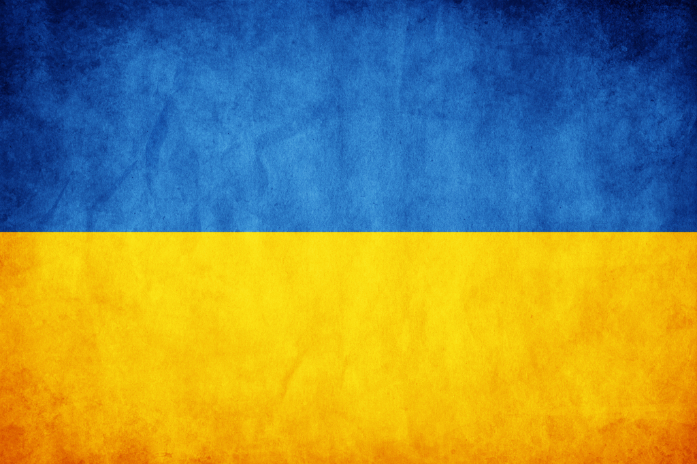

Держа́вний пра́пор Украї́ни — стяг із двох рівновеликих горизонтальних смуг синього і жовтого кольорів. Співвідношення ширини прапора до його довжини 2:3
Жовтий (золотий) і синій кольори використовувалися на гербі Руського королівства 14 століття. Вони також вживалися на гербах руських земель, князів, шляхти і міст середньовіччя і раннього нового часу. У 18 столітті козацькі прапори Війська Запорозького часто вироблялися з синього полотнища із лицарем у золотих чи червлених шатах, із золотим орнаментом та арматурою. 1848 року українці Королівства Галичини та Володимирії використовували синьо-жовтий стяг як національний прапор. У 1917–1921 роках, під час української революції, цей стяг був державним прапором Української Народної Республіки й Української Держави. 1991 року, після розвалу СРСР, цей прапор де-факто використовувався як державний стяг незалежної України. 18 вересня 1991 року Президія Верховної Ради України юридично закріпила за синьо-жовтим біколором статус офіційного прапора країни. 23 серпня в Україні щорічно відзначають День державного прапора.